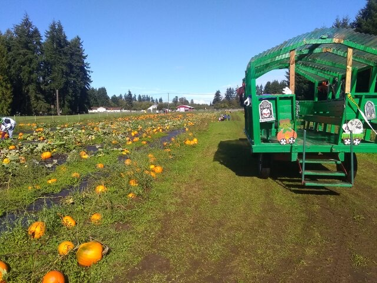
Bracelet
Pumpkin patch wagon ride
We drive you to and from our pumpkin patch.
Apple Festival & the farm
Pumpkins, wagon rides, goats and a whole lot of cider. Spend a day in the country just south of Olympia, from the fall Apple Festival to spring egg hunts and December lights.
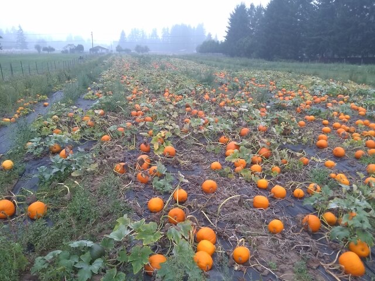
9 am to 5 pm. The 2026 festival opened Saturday, September 26.
Some activities are ticketed with a one-day activity bracelet. Call for this season’s prices.
9402 Rich Road SE, Olympia. The pumpkin patch is open every day in October.
Apple Festival & Pumpkin Patch
Tractor-drawn wagon rides to our pumpkin patch, the wooden maze and wonderful food and drinks. We press new crop apples from Eastern Washington every week for full flavored cider, and the store has fresh Fuji, Gala, Golden Delicious, Granny Smith, Honey Crisp and Jonagold apples, too.
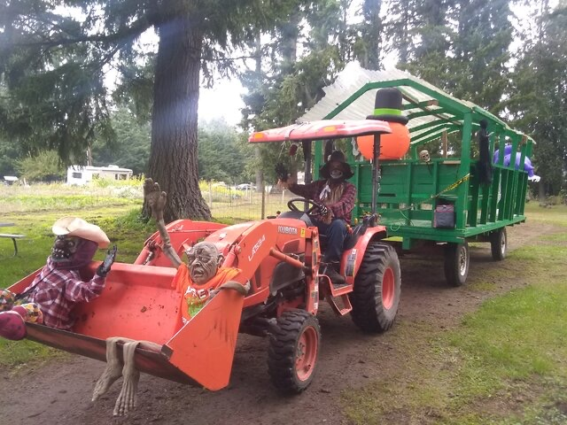
Festival activities
Activities are open subject to weather, and bracelet sales end before the activities close.

We drive you to and from our pumpkin patch.
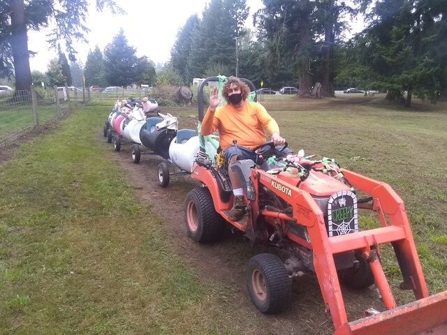
A bumpy adventure around the farm in barrel cars.
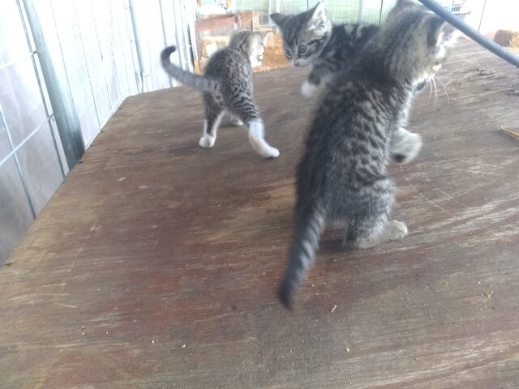
An interactive area with goats, bunnies, chickens, ducks, kittens and more.
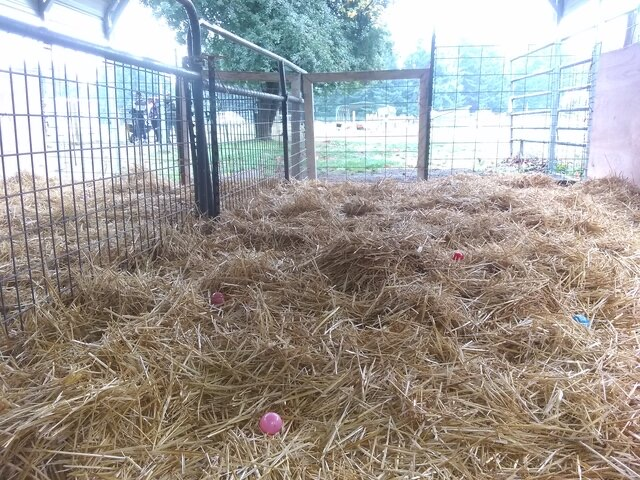
Search and find yummy candy hidden throughout the area.
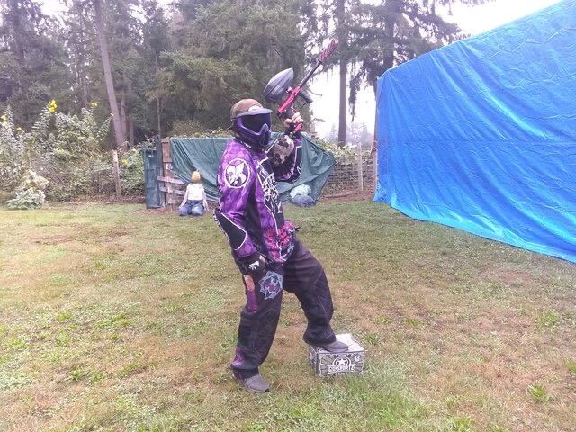
Take aim at pumpkin targets, with or without a bracelet.
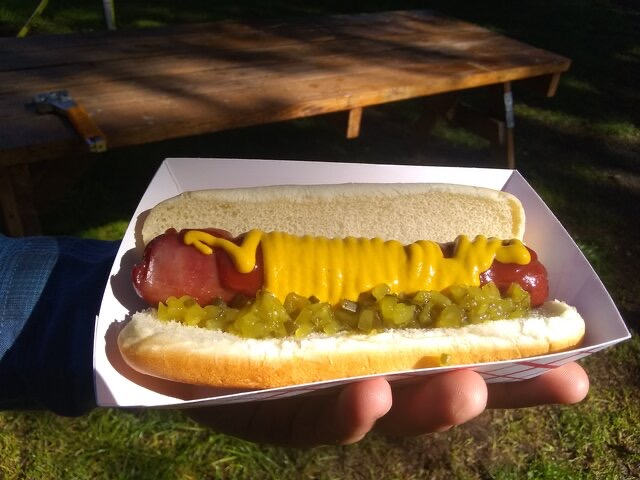
Hot dogs, sausages, brats, fries and chips, with spiced and berry cider to drink.
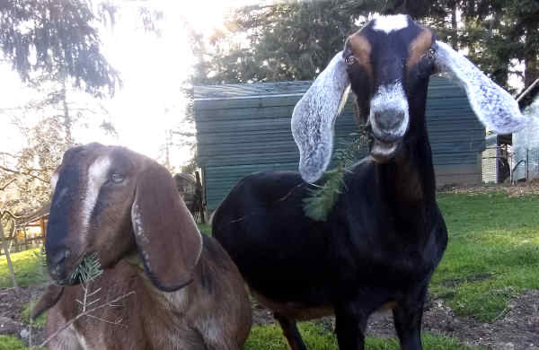
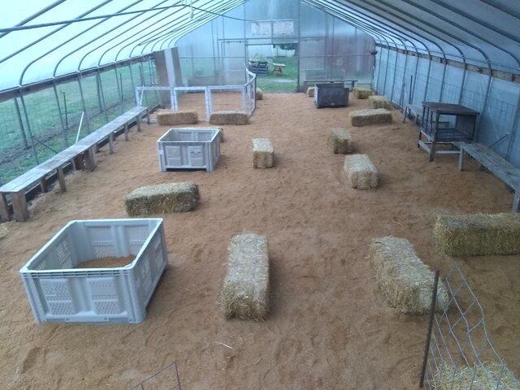
Meet the animals
Our Nubian goats stand on the fence and reach their necks out, so be careful. Say hello to the goats and sheep around the farm. Viewing animals around the farm is free.
Bring your family and friends, wander around our flower and vegetable gardens, picnic and feed the animals. Kids will enjoy the play area, including a wooden fence maze that’s open all year.
Ask about tours & partiesThrough the year
Kids love our Easter Egg Hunt at the farm.
Every weekend in October, with the pumpkin patch open every day of the month.
We transform the farm with thousands of lights.
The farm store is open year round, with apple fritters Thursday and Friday before noon and all weekend.
Dates change from year to year. Call (360) 491-7328 or check our Facebook for this season’s schedule.
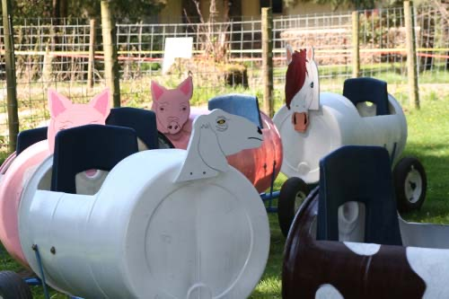